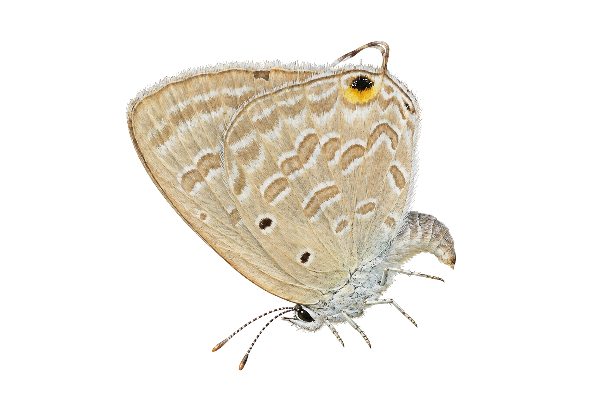

Lycaenidae · 060 / 165
Catochrysops strabo
Catochrysops strabo

বৈশিষ্ট্য ও শনাক্তকরণ
Catochrysops গণের লেজযুক্ত প্রজাতি; ঘনিষ্ঠ প্রজাতির সঙ্গে নিচের দাগ তুলনা দরকার।
স্ত্রী ও পুরুষের পার্থক্য
স্ত্রীর কালো প্রান্ত চওড়া, ডানা বেশি গোল।
আকার
ডানা মেলে প্রস্থ 25–30 mm; IIT Madras-এর নির্দেশিকার মান, ওকিনাওয়ার মাপ নয়।
ওকিনাওয়ার দ্বীপে রেকর্ড
রেকর্ডকৃত দ্বীপের উদাহরণ: ইশিগাকি, ইরিওমোতে, ইয়োনাগুনি, তাকেতোমি, কোহামা, হাতেরুমা। রেকর্ড বর্তমান প্রতিষ্ঠার নিশ্চয়তা নয়।
আবাসস্থল
খাদ্যগাছযুক্ত বনপ্রান্ত ও নিচু অঞ্চল; স্থানীয় রেকর্ড প্রধানত ইয়ায়েয়ামার।
জীবনযাপন ও অতিরিক্ত তথ্য
দ্বীপ ও খাদ্যতথ্য স্থানীয় সংকলনের সারসংক্ষেপ। শুধু ডিম পাড়া, পালন ও বিদেশি সাধারণ তথ্য স্থানীয় বন্য প্রজননের থেকে আলাদা।
শূককীট ও খাদ্য উদ্ভিদ
Pongamia pinnata খাদ্য।
তথ্যসূত্র ও সহায়ক পাঠ
- 日本の蝶（杉坂美典）：雌雄比較
ডেটায় উল্লেখিত সূত্র দেখার তারিখ: 2026-11-10 - 沖縄蝶類生態図鑑：ムラサキオナガウラナミシジミ
ডেটায় উল্লেখিত সূত্র দেখার তারিখ: 2026-11-10 - IIT Madras Heritage Centre: Catochrysops strabo
ডেটায় উল্লেখিত সূত্র দেখার তারিখ: 2026-11-10
তথ্য সরবরাহকৃত ডেটার উপর ভিত্তি করে তৈরি (হালনাগাদ: ১০ নভেম্বর ২০২৬)। কোনো দ্বীপের রেকর্ড সেখানে বর্তমান স্থায়ী বসবাস বা সহজে দেখা পাওয়ার নিশ্চয়তা নয়। চিত্র নির্দেশক; শনাক্তকরণে বাস্তব নমুনা ও সূত্র মিলিয়ে দেখুন।